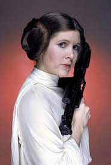

Starwars is the greatest movie series ever created. The first starwars movie was releaced on May 25th 1977. Star Wars was created by George Lucas. Since Lucas's first movie starwars has evolved into a resounding succes around the entire world. I will tell you about the movie that stared the franchize the fourth movie "A New Hope"

George Lucas
Our saga begins in the fourth movie on the planet of Tatooine with Luke Skywalker. He must go on the path of the Jedi, a race of noble warriors who wield lightsabers and use the force, an entity that flows through all things and gives the Jedi power. Luke’s journey takes him to Obi-wan Kenobi, a Jedi who lives in exile after the clone wars when the Jedi order was destroyed. While Obi-wan and Luke are together they find that lukes newly purchased droids C-3P0 and R2-D2 have a message for Obi-wan Kenobi from the Princess of Alderan. Princess Leia is captured by the Galactic Empire. They are the supreme force in the Galaxy and are seeking to conquer the entire galaxy. Luke and Obi-wan enlist the help of Han Solo and Chewbaca, two smugglers who need work to pay off their debts. They leave Tatooine and are on their way to Alderaan. Princess Leia is on the supreme space station known as the Death Star Shaped like a moon, she is being interrogated by Darth Vader a Sith Lord who is one of the Leaders of the Galactic Empire. Darth Vader asks for the location of the secret rebel base when the Princess refuses Darth Vader calls for the space station to fire on the planet. The station powers up its main weapon and fires a green laser at the planet, blowing the planet to pieces. We return to our Hero Luke Skywalker and his band of misfits traveling to Alderaan when they arrive however there is no planet but just an asteroid field. They then find a suspicious moon and decide to travel closer but once they realize what it is it is too late and they are caught in the tractor beam of the Death Star. The imperial troops known as stormtroopers enter the ship in search of its passengers, but the Stormtroopers find nothing and leave the ship in the hangar UNGUARDED!!! Luke and the others then exit the ship from the secret hatch under the floorboards and get onto the Death Star. Obi-wan uses the force and finds out that Leia is on the detention level so they get disguises and make their way to the detention level upon arriving they attack the guards and release the princess. They all meet up back at the ship with everyone except for Obi-wan who is caught in the hall by Darth Vader . They engage in an elaborate lightsaber duel but Obi-wan concedes to Vader and Vader strikes him down. Our heroes retreat from the Space Station to Yavin-4 the location of the Rebel base the empire tracks their ship there but the plans Princess Leai was transported when she was captured are plans to destroy the battle station. The rebel pilots with Luke among them go to the station in an attempt to destroy it but most of the rebel ships are shot down early on in the fight Luke is approaching the weak spot on the Death Star but Darth Vader is in close pursuit just before darth Vader is able to shoot Luke down Han and Chewbaca show up and save the day Luke fires the torpedoes into theDeath star destroying the Space station and saving the Rebel Alliance
| Luke Skywalker | |
| R2-D2 and C3PO | |
| Obi-wan Kenobi | |
| Han Solo and Chewbaca | |
| Princes Leia |  |
| Darth Vader | |
| Death Star | |
| StormTrooper | |
| Light Saber | |
| Rebel Alliance Symbol |